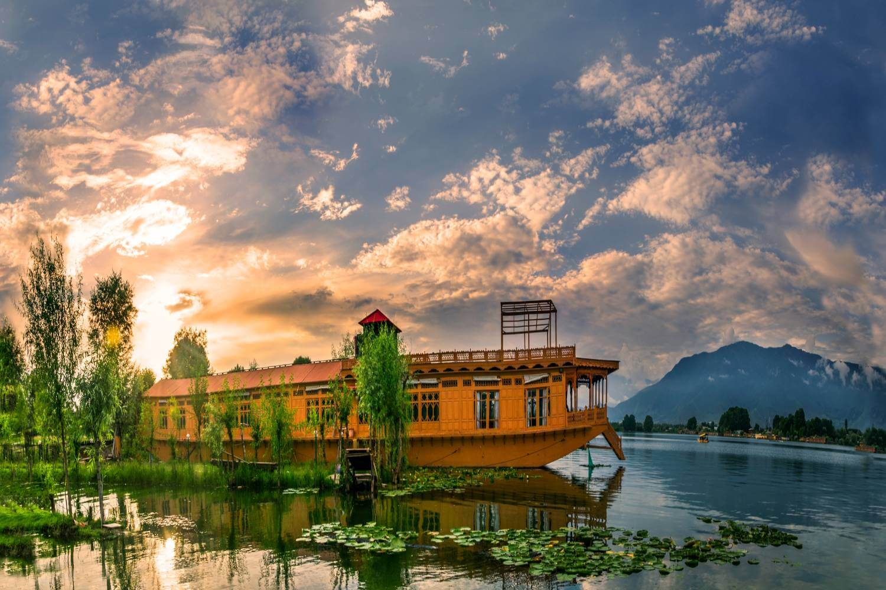
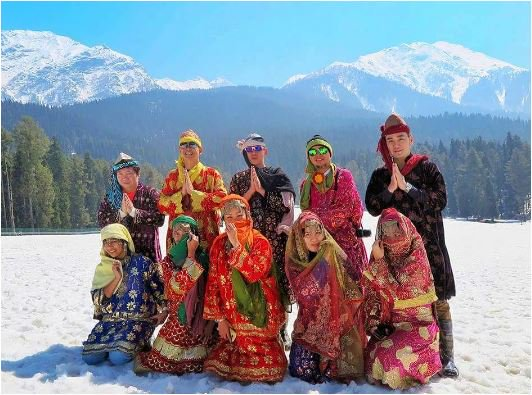
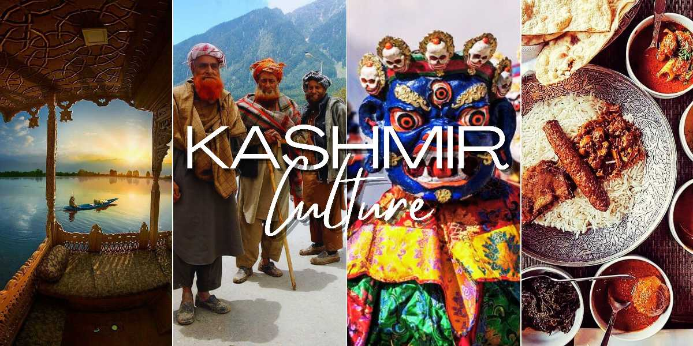
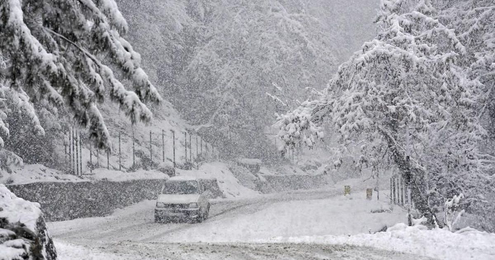

╰┈➤Jammu and Kashmir Information
| ✧ Aspect | Information |
|---|---|
| ✧ Capital | Srinagar (Summer), Jammu (Winter) |
| ✧ Chief minister | Jammu and Kashmir is currently under the direct administration of the Lieutenant Governor. |
| ✧ Largest City | Srinagar |
| ✧ Districts | 22 |
| ✧ Official Language | Urdu |
| ✧ Other Language | Kashmiri, Dogri |
| ✧ Population | Approximately 13 million |
| ✧ Area | Approximately 222,236 square kilometers |
| ✧ Major Rivers | Jhelum, Chenab, Indus |
| ✧ Major Industries | Tourism, Agriculture, Handicrafts, Horticulture |
| ✧ Popular Place | Dal Lake, Gulmarg, Pahalgam, Vaishno Devi Shrine, Leh-Ladakh |
╰┈➤ Traditional Dresses of Jammu and Kashmir
Kashmiri pheran is the traditional dress of Kashmir. The typical dress of Kashmir which were worn both by men and women is Kashmiri pheran. Pashmina shawl is the famous shawls of Kashmir.
╰┈➤History of Jammu and Kashmir
Jammu and Kashmir, often referred to as the crown jewel of India, boasts a rich and complex history that spans millennia. Situated in the northernmost part of India, this region has been a melting pot of cultures, religions, and civilizations. Historically, it was known as the kingdom of Jammu and Kashmir, ruled by various dynasties including the Mauryas, Kushans, Guptas, and the Mughals.
In the early 19th century, the region came under the control of the Sikh Empire, but in 1846, following the First Anglo-Sikh War, it was ceded to the British East India Company under the Treaty of Amritsar. The British ruled the region until India gained independence in 1947.
The partition of British India in 1947 led to the creation of Pakistan and India, and the princely states were given the option to accede to either India or Pakistan. Maharaja Hari Singh, the ruler of Jammu and Kashmir, initially sought to remain independent. However, facing an invasion by tribal militias from Pakistan, he opted to accede to India in exchange for military assistance.
This decision sparked the Indo-Pakistani War of 1947-48, leading to the division of the region into areas administered by India (Jammu and Kashmir) and Pakistan (Azad Kashmir and Gilgit-Baltistan). The Line of Control (LoC) was established as the de facto border between the two countries.
Since then, Jammu and Kashmir has been a contentious issue between India and Pakistan, with both countries claiming the entire region as their own. The situation further complicated in 1989 with the onset of an armed insurgency in Indian-administered Kashmir, fueled by separatist sentiments and alleged human rights abuses.
In August 2019, the Indian government, under Prime Minister Narendra Modi, revoked the special autonomous status granted to Jammu and Kashmir under Article 370 of the Indian Constitution. This move drew mixed reactions domestically and internationally and led to a significant shift in the region's political landscape.
Today, Jammu and Kashmir remains a region of immense natural beauty and cultural diversity, but also one plagued by political unrest and territorial disputes. The history of this region serves as a reminder of the complexities and challenges inherent in the quest for peace and stability in the Indian subcontinent
Thank You
╰┈➤Jammu and Kashmir Pictures




